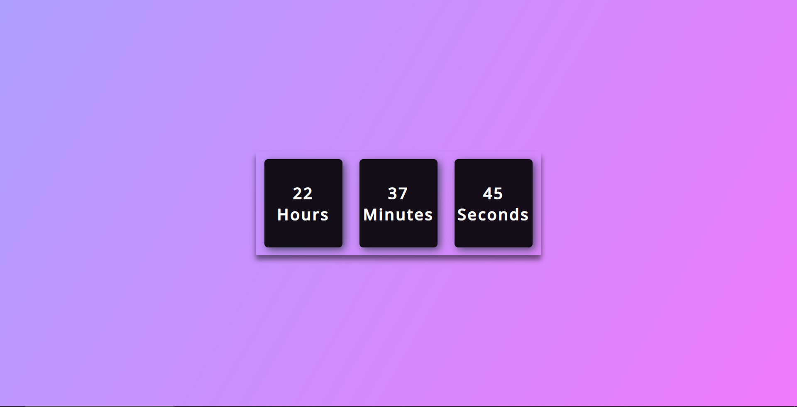
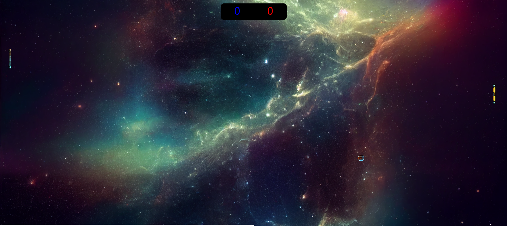

Meus
Projetos




Seja bem vindo(a) ao meu portfolio pessoal aqui você encontrará meus projetos, habilidades e um pouco sobre mim.
Sou formada em técnico em mecatrônica pelo SENAI, onde aprendi automação industrial, programação de CLP, robótica, desenho técnico, C# e C++.
Saiba maisPrograma de capacitação em desenvolvimento front-end, onde aprendi a desenvolver projetos web utilizando HTML, CSS, JavaScript, React e Angular.
Saiba maisEstou desenvolvendo minhas habilidades em análise de dados, machine learning, big data, inteligência artificial, estatística e desenvolvimento web.
Saiba maisDesde que comecei minha jornada na tecnologia, sempre fui movida pela curiosidade e pelo desejo de resolver problemas. Essa motivação me levou a explorar diversas áreas e ferramentas como JavaScript, HTML, CSS, Python, SQL, Power BI e Inteligência Artificial, C++. Cada projeto que desenvolvi reflete não apenas o conhecimento técnico que adquiri, mas também minha paixão por inovação e desafios.
Algumas das habilidades que trago comigo incluem pesquisa, trabalho em equipe, comunicação eficaz, resolução de problemas, criatividade, análise e pensamento analítico. Tenho muita disposição para aprender e me adaptar a novas situações, sempre buscando maneiras de aprimorar minhas habilidades e fazer contribuições significativas.
Obrigada por reservar um tempo para explorar meu portfólio. Espero que os projetos apresentados possam demonstrar minha dedicação e potencial. Estou ansiosa para explorar novas oportunidades e desafios no campo da tecnologia, onde posso continuar a crescer e fazer a diferença.